Introduction
Torque 3D includes an object called a ScatterSky which uses a dynamic sky coloring system to create more vibrant varying skies than the simple Skybox object.
As the name implies, the ScatterSky object produces the sky. Additionally, it includes level lighting, sun positioning,
and a hook for time of day manipulation. This can be used for a fully
functioning day/night system.
Setup
This article was written using a newly generated project with the
Full Template, which ships with plenty of free assets for testing and
learning. To save time and focus on this specific section of the World Editor documentation, we are going to bypass asset creation
until later on.
Delete Existing Sun and Skybox
Every new mission starts with both Skybox and Sun objects. Since the ScatterSky object contains the functionality of those two objects embedded within it they must be removed in order to use a ScatterSky in the level.
To delete the existing Skybox, switch to the Object Editor tool and locate your Scene Tree panel. Select the Scene tab. You should see a single Skybox object in the MissionGroup. Select the object and delete it.
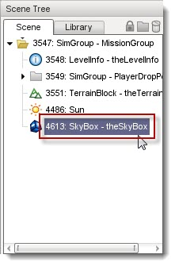
The Skybox object should no longer be present in the Scene Tree. More importantly, the sky has now been removed from your level. Because nothing is rendered beyond a Skybox, Torque 3D will be rendering absolutely nothing where the object used to exist.
(click to enlarge)
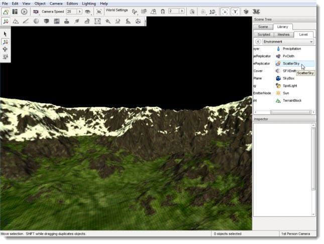
If your level is currently lit, you can see the terrain. This means there is already a Sun object in your level. Since a ScatterSky also contains its own sun, we will need to clear the level of any conflicts. Just as you did with the Skybox, locate the Sun object in your mission group and delete it. Once you do so, your level should be completely dark.
(click to enlarge)
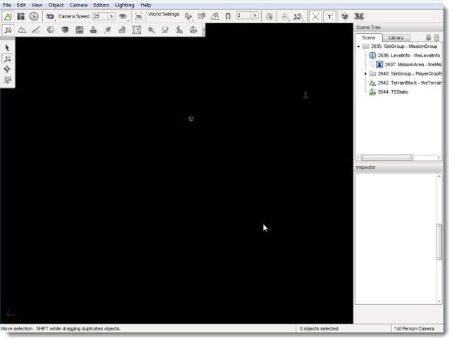
Adding a ScatterSky
To create a new ScatterSky, change to the Library tab in the Scene Tree panel. Click on the Level tab and select the Level folder. Locate the ScatterSky entry and double-click it.
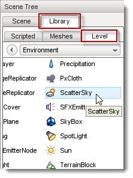
The Create Object dialog will appear. The Object Name is what you want your ScatterSky to be named. It will appear in the MissionGroup of the Scene Tree. Enter theSky as the name, leave the rest of the values at their defaults, then click Create New.
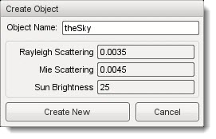
A new ScatterSky object will be created and automatically added to your level. Therefore, it will once again have a sky. Since the ScatterSky supplies a sun, the level should now be lit.
(click to enlarge)
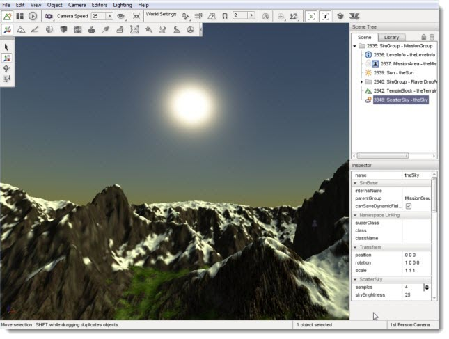
ScatterSky Properties
Additional properties can be changed with the Inspector pane. To change the Skybox properties using the Inspector Pane, click the Scene tab. Then click the name of your new ScatterSky object. The Inspector pane will update to display the current properties of your new Skybox.
Hover over each section in the image below to see a description of the fields within it:
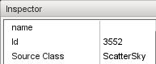name: TypeName. Optional global name of this object.
id : TypeCaseString. SimObjectId of this object. Read Only.
Source Class : TypeCaseString. Source code class of this object. Read Only.', WIDTH, 450)" onmouseout="UnTip()" >

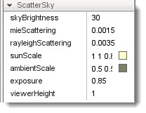skyBrightness: TypeF32. Global brightness and intensity applied to the sky and objects in the level.
mieScattering : TypeF32. Affects the size and intensity of light scattering around the sun.
rayleighScattering : TypeF32. Controls how blue the atmosphere is during the day.
nightColor : TypeColorF. Defines night time color when the sun is not shining on the level.
sunScale : TypeColorF. The color shading applied to objects in direct sun light.
ambientScale : TypeColorF. The color shading applied to objects not in direct sun light, such as in the shadows.
viewerHeight : TypeF32. The normalized height (from 0 to 1) of the viewer between the center of the planet and the top of the atmosphere.
exposure : TypeF32. Controls the contrast of the sky and sun.
interpolationStart : TypeF32. The angle at which interpolation to the night coloration starts.
interpolationEnd : TypeF32. The angle at which interpolation to the night coloration ends (fully interpolated).', WIDTH, 400)" onmouseout="UnTip()" >
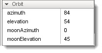azimuth: TypeF32. The horizontal angle of the sun measured clockwise from the positive Y world axis.
elevation : TypeF32. The elevation angle of the sun above or below the horizon.
moonAzimuth: TypeF32. The horizontal angle of the moon measured clockwise from the positive Y world axis.
moonElevation : TypeF32. The elevation angle of the moon above or below the horizon', WIDTH, 450)" onmouseout="UnTip()" >

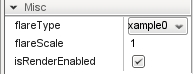flareType: TypeLightFlareDataPtr. Datablock for the flare and corona produced by the Sun.
flareScale : TypeF32. Changes the size and intensity of the flare.
isRenderEnabled : TypeBool. Only render if true (and if class is render-enabled, too).', WIDTH, 450)" onmouseout="UnTip()" >
nightColor: TypeColorF. Global ambient coloring of scene during night.
nightFogColor : TypeColorF. Color shading of fog present during night scenes.
moonEnabled : TypeBool. Toggles rendering of moon image during night.
moonTexture : TypeImageFilename. Image used for rendering the moon.
moonScale : TypeF32. Determines size of the moon during night scenes.
moonTint : TypeColorF. Color shading applied to moon image during night scenes.
useNightCubemap : TypeBool. Toggles rendering of star cubemap during night scenes, similar to Sky Box.
nightCubemap : TypeCubemapName. Cube map used to render stars in the sky during night scene.', WIDTH, 450)" onmouseout="UnTip()" >
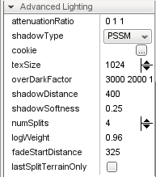attenuationRatio: TypePoint3F. The proportions of constant, linear, and quadratic attenuation to use for the falloff for point and spot lights.
shadowType : TypeEnum. The type of shadow to use on this light.
cookie : TypeStringFilename. A custom pattern texture which is projected from the light.
texSize : TypeS32. The texture size of the shadow map.
overDarkFactor : TypePoint4F. The ESM shadow darkening factor.
shadowDistance : TypeF32. The distance from the camera to extend the PSSM shadow.
shadowSoftness : TypeF32. Adjusts shadow edge clarity.
numSplits : TypeF32. The logrithmic PSSM split distance factor.
fadeStartDistance : TypeF32. Start fading shadows out at this distance. 0 equates to auto calculate this distance.
lastSplitTerrainOnly : TypeBool. This toggles only terrain being rendered to the last split of a PSSM shadow map.', WIDTH, 450)" onmouseout="UnTip()" >
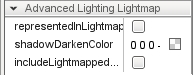representedInLightmap: TypeBool. This light is represented in lightmaps (static light, default: false).
shadowDarkenColor : TypeColorF. The color that should be used to multiply-blend dynamic shadows onto lightmapped geometry (ignored if representedInLightmap is false).
includeLightmappedGeometryInShadow : TypeBool. This light should render lightmapped geometry during its shadow-map update (ignored if representedInLightmap is false).', WIDTH, 450)" onmouseout="UnTip()" >
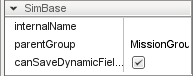canSaveDynamicFields: typeBool. True if dynamic fields (added at runtime) should be saved, defaults to true.
internalName : TypeString. Non-unique name used by child objects of a group.
parentGroup : TypeString. Group object belongs to.', WIDTH, 450)" onmouseout="UnTip()" />
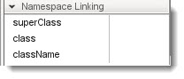superClass: TypeString. Links object to script super class (parent) namespace.
class: TypeString. Links object to script class namespace.
className: TypeString. Legacy version of class field.
', WIDTH, 450)" onmouseout="UnTip()" >
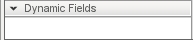(n/a): *. No stock dynamic values.', WIDTH, 450)" onmouseout="UnTip()" >
Modifying Brightness
Remember to refer back to the properties as you proceed through the
rest of this guide. It is time to modify some of the more
important fields of the current ScatterSky object. After each change
is demonstrated, you will be reverting back to the stock values to show
how these modifications affect the object.
Now will start with adjusting the brightness of the sky and
atmosphere. Under the ScatterSky section of the properties, look for
the skyBrightness field. The default value is 25.
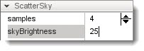
(click to enlarge)
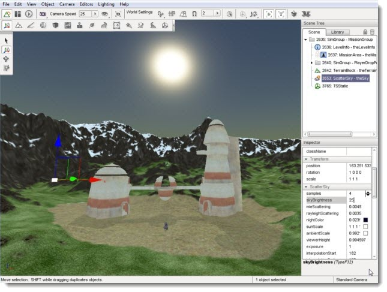
The skyBrightness field acts a global modifier of your
brightness in the scene. Changing this value is similar to adjusting the
contrast of a camera or monitor. Reduce the value to 5.
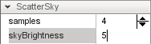
This reduction will dramatically change the appearance of your level.
(click to enlarge)
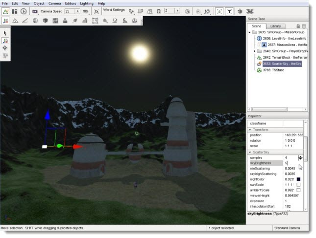
Now, greatly increase the value of skyBrightness to around 85.
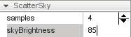
The view of your level should be extremely bright, as if the scene takes place in a desert at high noon.
(click to enlarge)
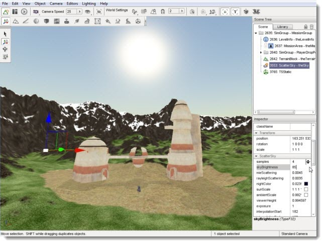
If you have not already done so, revert your default brightness back to 25. You should change each value back to the default in this manner between each section of the remaining guide to see the effects of the next property.
Modifying Scattering
The scientific concept of scattering and how it affects your level
is somewhat complex. The rayleighScattering and mieScattering values
are extremely sensitive, and it is important that you have an
understanding of how they work. The simplest way to explain scattering
is to answer a question children often ask: "Why is the sky blue?"
In reality, beyond the atmosphere of the sky is blank space, that is, blackness. When you look up at the night sky, you can see the black of space and the stars it contains. However, during the day you see a blue sky. The blue color is due to the light rays from the sun being scattered by the molecules of the atmosphere as it passes through. Light appears to be white but it is actually composed of many different colors. The sky is usually blue because blue light scatters more easily than the other colors due to its physical properties.
The sky at the zenith is a darker blue than the sky near the horizon for two reasons. First, the atmosphere at this altitude is composed of much smaller particles, which is only capable of scattering the darker shades of blue light. Second, the light has had less opportunity to be scattered since it has not passed through as much atmosphere yet. The more times the same light is scattered, the paler the blue will become.
However, blue is not the only color that is scattered by the atmosphere, it is just the most common. Other colors, such as the reds at sunset, are due to how much atmosphere the light has passed through to get to your eyes. In this case, reds and blues are both being scattered but blue has been dissipated so much that it is no longer visible. The result is a red sky.
The scientific term for this light scattering effect is called Rayleigh Scattering, thus the rayleighScattering property of Torque 3D controls the color and darkness of the ScatterSky object.
The size and composition of particles in the atmosphere, such as dust and water, also has an effect on how light appears. Larger particles tend to scatter all colors of light approximately the same. This effect makes clouds, which are made of water vapour, appear to be white or grey. This is because the colors of the light are being scattered the same so that what you see resembles the original white form.
This type of scattering is also responsible for the clarity of a bright object and how the light rays are projected from it. The scientific term for this type of scattering is Mie Scattering, thus the mieScattering property of Torque 3D controls the clarity of light from bright objects such as the sun.
In summary, the scattering properties in Torque 3D are used to emulate the affects of nature. The mieScattering property affects the appearance of how light waves are projected from the sun object and the rayleighScattering property affects the color of the sky including how blue it will be.
Proceed to see the adjustment of these properties in
action. Reduce the mieScattering field to a small value, such as
0.0005.
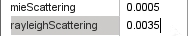
You should notice that the scattering of the light around
the sun object has been drastically reduced, resulting in a smaller and
smoother sun.
(click to enlarge)
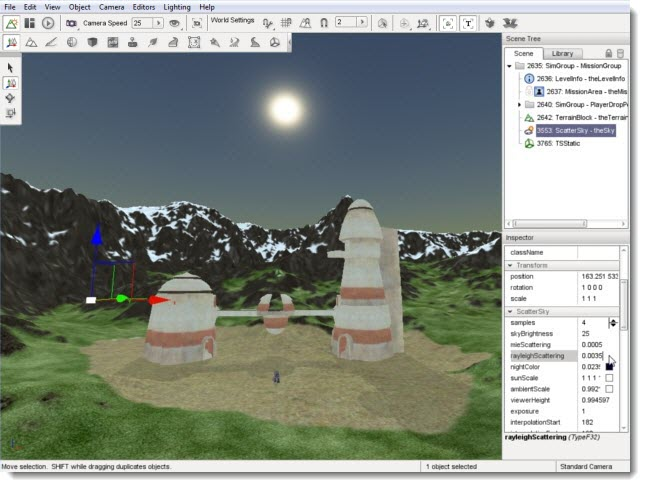
Reset the mieScattering back to the default value (approximately 0.0045). Lower the rayleighScattering field to 0.0006.
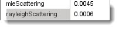
The atmosphere of the sky should now be a darker shade of blue. Reducing the
rayleighScattering value simulates two things. First, it simulates an atmosphere
which reduces the colors of light that will be scattered limiting it to the
darker blues. Second, it simulates an atmosphere that has had less opportunity
to dissipate the light leaving the darker shade of blue intact:
(click to enlarge)
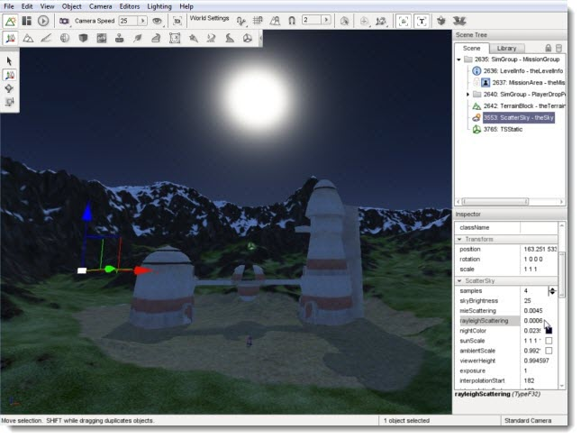
At some point, you can reduce the value only so far before you hit a shade of blue that is almost completely black. This does not mean you are actually seeing the black of space, rather you are seeing the darkest shade of blue light which has not been dissipated at all.
Go in the opposite direction. Begin increasing the rayleighScattering until you hit a value of 0.008. This simulates two things. First, it simulates an atmosphere which allows more colors of light to be scattered. Second, it simulates an atmosphere that has had less opportunity to dissipate the light leaving paler shades of the light.
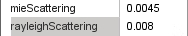
The result in your level is a broader range of colors in your sky.
(click to enlarge)
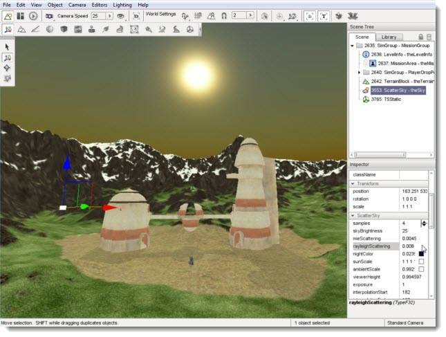
If you go too high with the value, your sky will eventually become black. This is due to the allowance of all wave lengths to interact with the atmosphere. The effect is known as the subtractive rule of colors: white is the complete lack of color (light interaction) and black is the presence of all colors. In other words, the atmosphere is absorbing all colors so you see black.
If you have become confused, there are quite a few resources in your local library and on the Internet you can look up to learn more. If you have gotten this far, but wish to keep it simple, remember the following:
- mieScattering - Higher equals bigger and more scattered Sun. Lower equals smaller, smoother Sun.
- rayleighScattering - Higher equals less blue sky. Too high
equals black sky. Lower equals more blue sky. Too low equals black sky.
Modifying Colors
Move on to simpler concepts and property adjustments. The
nightColor is a conditional property, as it only affects the scene
during certain lighting conditions. As explained in the Sun
documentation, modifying the azimuth and elevation will change the
"time of day" for your level.
Go ahead and set the Elevation property in the Orbit section to 200, which will place the sun below the horizon. When the sun is no longer shining on your level, it is night time.
(click to enlarge)
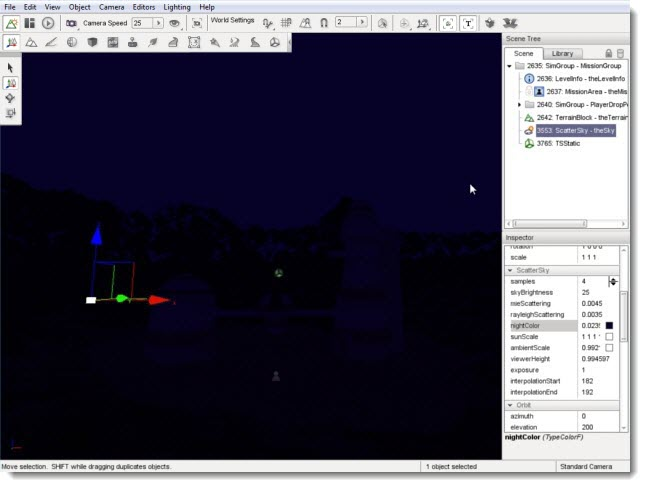
Scroll to the Night section in the Inspector Pane. Instead of manually guessing color values, click on the colored box next to the nightColor property. This action will open the Color Picker dialog. The dialog allows you to visually adjust the shade of your night time color. For an intense effect, go with an unnatural color such as red.
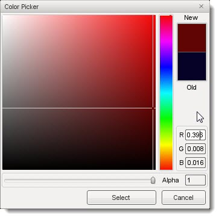
Click the select button when you are ready. Your level
should immediately reflect the nightColor change you have made. Very
creepy...
(click to enlarge)
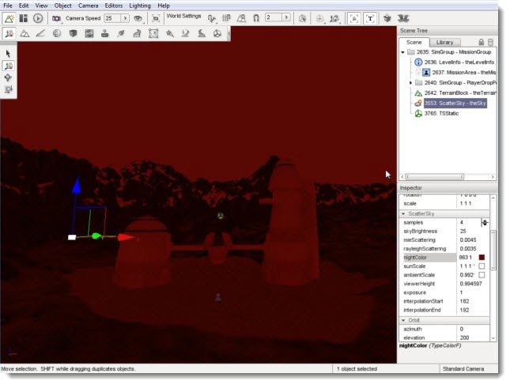
Definitely change the value back to something more suitable, such as deep blue/black color. Change the Elevation property in the Orbit section back to a number between 0 and 90 such as 45 to bring the sun back above the horizon and relight your scene.
Modifying Shadows and Light Intensity
There are two fields under the Lighting section that strongly influence how your scene appears. The first property, castShadows, can be toggled on or off. Clicking on the property to toggle it off will result in a blank box.
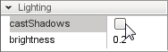
With castShadows disabled, nothing in your scene will cast a shadow: objects, terrain, etc.
(click to enlarge)
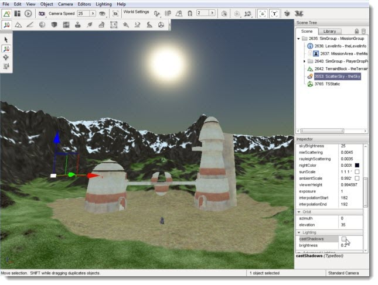
You can re-enable the shadows in your scene by clicking the box
again, which will produce a check mark informing you that it has been
enabled.

If you are using Advanced Lighting, the objects in your
level will immediately begin casting shadows. If you are using Basic
Lighting, you will need to relight the scene. Either way, the shadows
will update according to the position of the sun.
(click to enlarge)
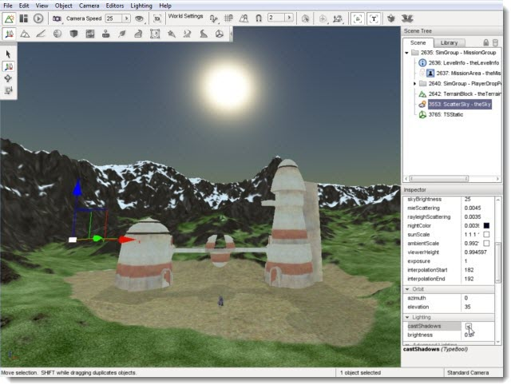
The brightness field under the Lighting section is completely
separate from the skyBrightness property in the ScatterSky section.
Unlike skyBrightness, which changes the contrast of your entire scene
(particularly the sky itself), the brightness property under Lighting
directly affects your objects in the scene.
You can see how this property functions by adjusting the value. Increase the brightness to 1.
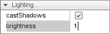
The lighting in your scene should be
much brighter.
Additionally, the shadows in your scene will be much darker and more
defined.
(click to enlarge)
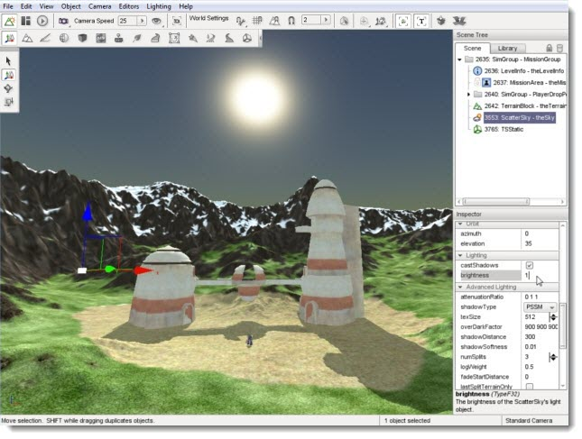
Notice how your atmosphere (sky and sun) did not change. Every other object in
your scene should be better lit. You can
remove the additional brightness by setting the value of the property
to 0.

The result is the additional, global brightness factor has been
completely removed. Your lighting should now be minimal, and your
shadows nearly invisible.
(click to enlarge)
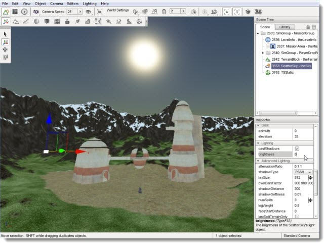
Conclusion
In previous guides, you learned how to add an individual Sun and
Skybox. The ScatterSky is a more advanced object intended to simulate
a nearly complete atmosphere. To fully simulate a realistic atmosphere,
you can use the ScatterSky object in conjunction with the available cloud layer
objects.
There are two cloud layer objects
which you can use: Basic and
Advanced.
|
{kind=link}
{kind=link}
{kind=link}
{kind=link}
{kind=link}
{kind=link}
{kind=link}
{kind=link}
{kind=link}
{kind=link}
{kind=link}
{kind=link}
{kind=link}
{kind=link}
{kind=link}